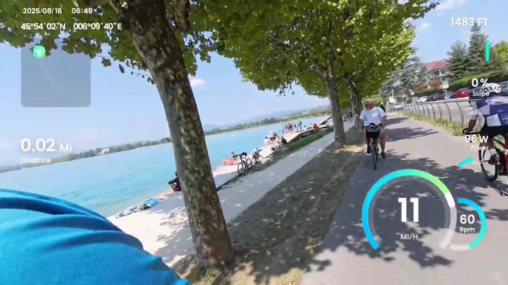

West shore · home base
Sévrier
Home base. Walk to the lake, get on the bike path, come back wet.
- Best for
- Default swim, no-car days, easy dinners.
- Water
- Public stretch. Walk-in, repeat.
- Food
- Bakery, market, dinner at the house.
- Nearby
- Annecy 20 min by bike; Saint-Jorioz 10 min south.
Not the flashiest. The useful one.